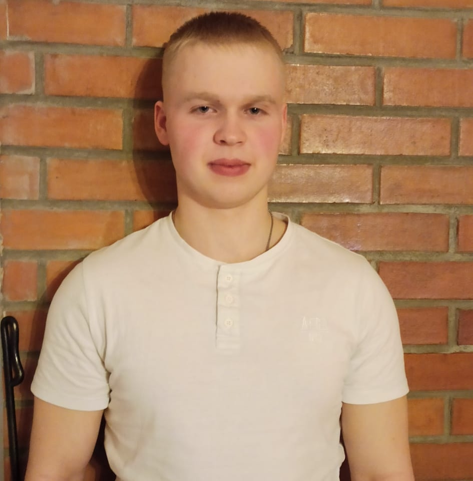

My Resume

Summary
My name is Hendrik Leis, I live in Tartu, Estonia. I am 23 years old and I
am looking for a job as a web developer. I am a quick learner and very
motivated to provide value into any work that I do.
Education:
- 2009-2018 - Tartu Karlova Kool
- 2018-2021 - Tartu Jaan Poska Gümnaasium
- 2022-2023 - University of Tartu
- 2023-2024 - Tallinn University of Technology
- 2025-... - Vocational College of Tartu
Work Experience:
- 2024-2024 - AS Erapuit
- 2024-2024 - AS Assiku Puit
- 2024-... - OG Elektra AS
Skills:
- B2 level drivers license
- Python programming language
- Good teamwork skills
- Good listening skills
Aadditional info
I have served 11 month in the Estonian Defence Forces, where I specialised
as a radio and communication expert. I have achieved podium spots in
junior Estonian championships in volleyball. I have completed the CAE
examination and attained C1 level in English.
More:
My Hobbies
Contact Me